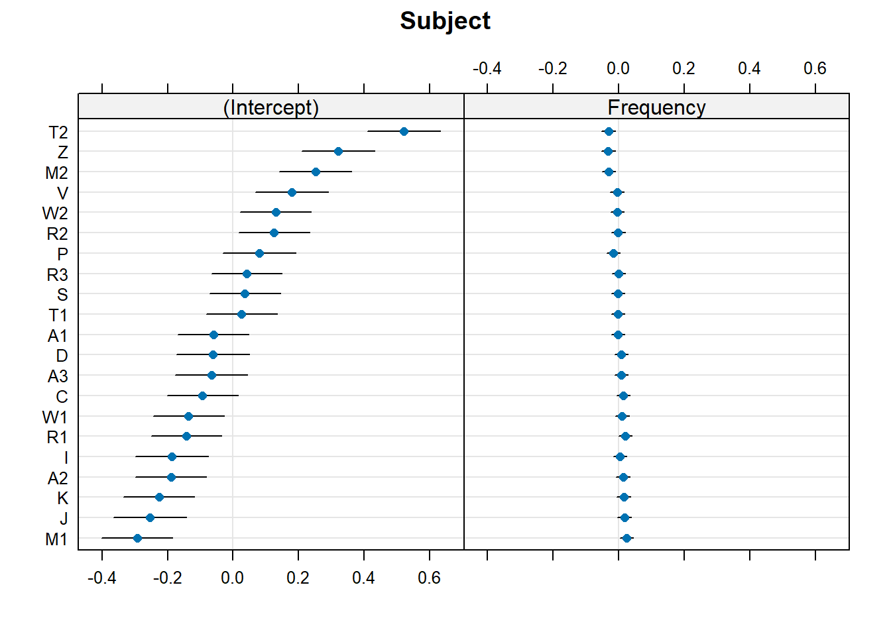
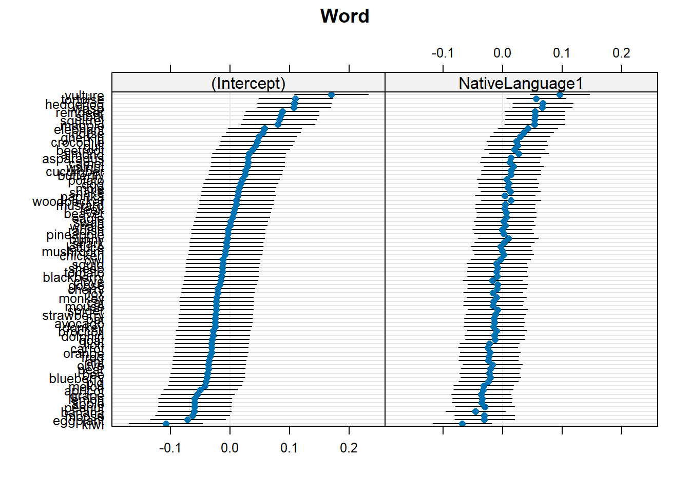
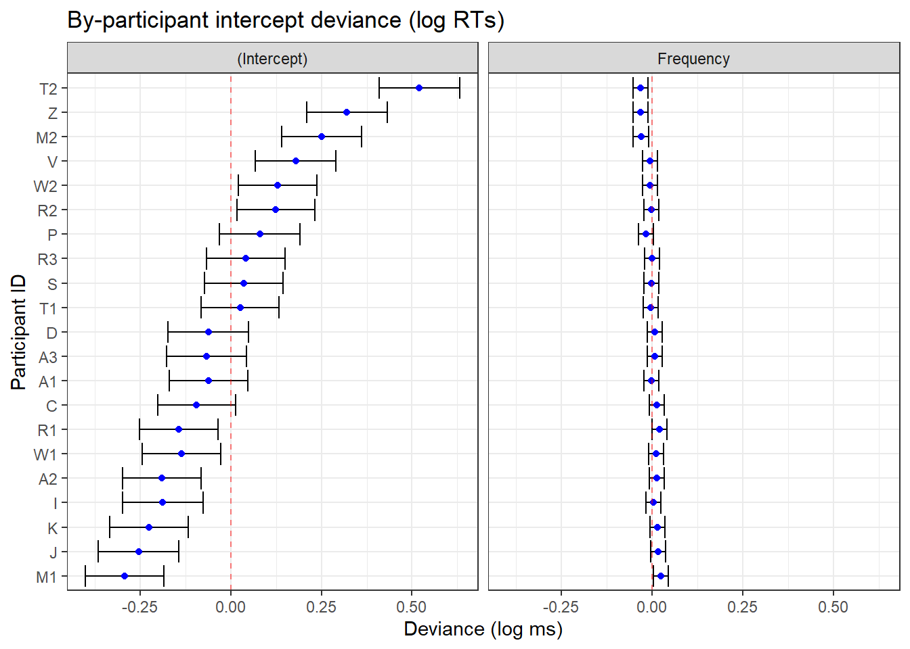
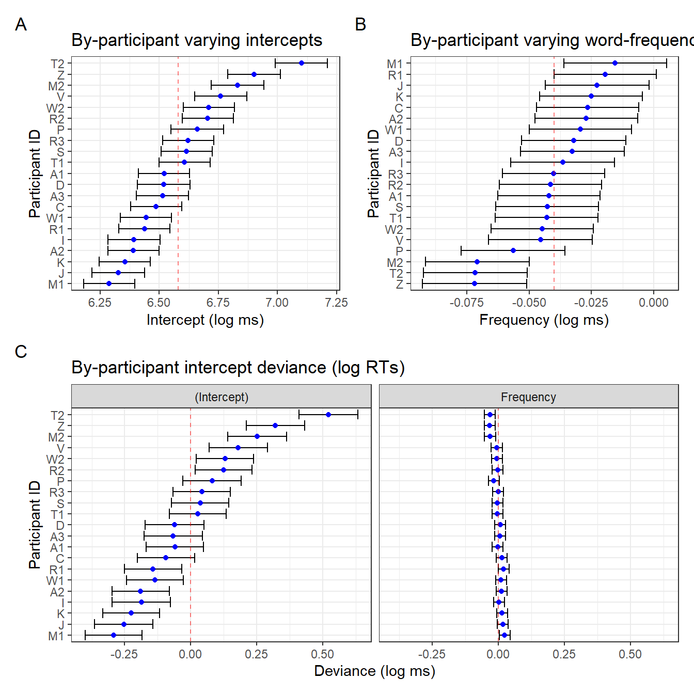
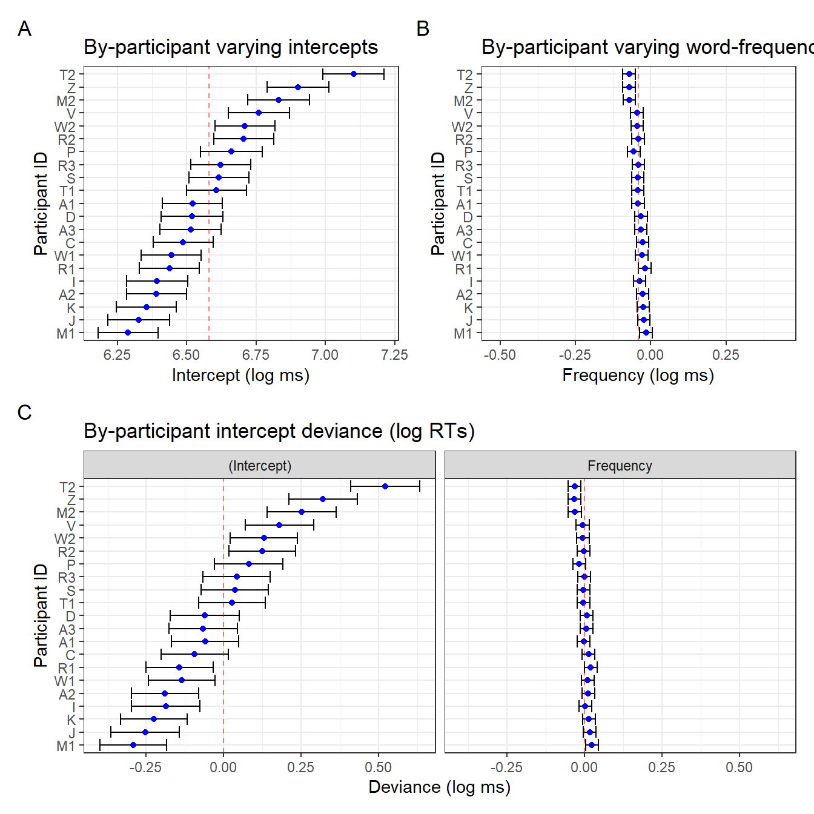
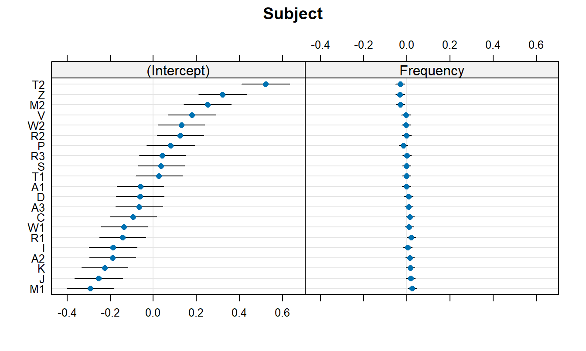

## install 'pacman' if you don't have it
# install.packages("pacman")
# p_load(): load or install all listed CRAN packages
pacman::p_load(
languageR, # for the example data
dplyr, # summarising our data
janitor, # for summarising our data
lme4, # fitting our model
lattice # for the caterpillar plots
)This blog post goes over how to produce visualisations of by-grouping factor (e.g., by-participant) varying intercepts and slopes.
Set-up
The set-up for this example contains everything leading up to inspecting the random effects of a linear mixed model.
Packages
Required packages for reproducible example:
Load data
We’ll use a dataset from the languageR dataset (Baayen & Shafaei-Bajestan, 2019).
df_lexdec <- languageR::lexdecInspect dataset
Check out the variable names:
names(df_lexdec) [1] "Subject" "RT" "Trial" "Sex"
[5] "NativeLanguage" "Correct" "PrevType" "PrevCorrect"
[9] "Word" "Frequency" "FamilySize" "SynsetCount"
[13] "Length" "Class" "FreqSingular" "FreqPlural"
[17] "DerivEntropy" "Complex" "rInfl" "meanRT"
[21] "SubjFreq" "meanSize" "meanWeight" "BNCw"
[25] "BNCc" "BNCd" "BNCcRatio" "BNCdRatio" Let’s look at the first few rows of some selected columns:
head(df_lexdec[c(1:5,9)]) Subject RT Trial Sex NativeLanguage Word
1 A1 6.340359 23 F English owl
2 A1 6.308098 27 F English mole
3 A1 6.349139 29 F English cherry
4 A1 6.186209 30 F English pear
5 A1 6.025866 32 F English dog
6 A1 6.180017 33 F English blackberryHow many participants?
length(unique(df_lexdec$Subject))[1] 21There are 21 participants in this dataset. How many unique words were there?
length(unique(df_lexdec$Word))[1] 79There are 79 words.
How many observations (rows) per participant?
df_lexdec |>
dplyr::count(Subject) |>
count(n, name = "Subject") n Subject
1 79 21We see that all 21 participants had 79 observations, i.e., this was a repeated measures design. This is nice and clean, as 79 x 21 equals the number of observations in the dataset (1659):
79*21 == nrow(df_lexdec)[1] TRUEThis means there are no missing values. Wouldn’t have been a problem for our model, but is good to know (and always good to double check).
Fit mixed effects model
We’ll ignore a lot of steps for the sake of simplicity here (e.g., transforming variables). I will just set the two-level factor NativeLanguageOther to sum contrast coding.
levels(df_lexdec$NativeLanguage)[1] "English" "Other" I see that the level English comes first. I want to set this to -0.5, and Other to +0.5. I do that like so:
contrasts(df_lexdec$NativeLanguage) <- c(-0.5, +0.5)And I check the contrasts:
contrasts(df_lexdec$NativeLanguage) [,1]
English -0.5
Other 0.5Let’s fit a linear mixed model with log reaction times (RT) as predicted by word frequency (Frequency), with by-participant (Subject) and by-word (Word) varying intercepts and slopes.
mod_lexdec <-
lmer(RT ~ Frequency + NativeLanguage +
(1 + Frequency | Subject) +
(1 + NativeLanguage | Word),
data = df_lexdec,
control = lmerControl(optimizer = "bobyqa")
)First: note we have a single varying slope for participant and word each. The effect of Frequency is allowed to vary between participants because each participant contributed data points for words of different frequencies (presumably). The effect of NativeLanguage is allowed to vary between words because we have data points from different NativeLanguage levels (English, Other) for each word (presumably). Importantly, NativeLanguage does not vary within a single subject, nor does word frequency vary within a single word.
Inspect model
summary(mod_lexdec)Linear mixed model fit by REML ['lmerMod']
Formula: RT ~ Frequency + NativeLanguage + (1 + Frequency | Subject) +
(1 + NativeLanguage | Word)
Data: df_lexdec
Control: lmerControl(optimizer = "bobyqa")
REML criterion at convergence: -964.8
Scaled residuals:
Min 1Q Median 3Q Max
-2.3977 -0.6132 -0.1193 0.4740 6.2917
Random effects:
Groups Name Variance Std.Dev. Corr
Word (Intercept) 0.0032648 0.05714
NativeLanguage1 0.0014730 0.03838 0.87
Subject (Intercept) 0.0462386 0.21503
Frequency 0.0003824 0.01956 -0.88
Residual 0.0288063 0.16972
Number of obs: 1659, groups: Word, 79; Subject, 21
Fixed effects:
Estimate Std. Error t value
(Intercept) 6.580171 0.054611 120.492
Frequency -0.039879 0.007122 -5.599
NativeLanguage1 0.078592 0.054036 1.454
Correlation of Fixed Effects:
(Intr) Frqncy
Frequency -0.842
NativeLngg1 0.015 0.103In terms of fixed effects, we see a negative slope for Frequency, indicating shorter log reaction times for more frequent words. We see a positive slope for NativeLanguageOther, indicating longer log reaction times for participants whose first language was not English. We will not consider the size of these effects nor whether they’re “significant”. We’re really interested in the random effects here.
Random effects
We have our model (log-transformed reaction times to a lexical decision task, with the predictors log word-frequency and native language (English or Other), with by-participant and -word varying intercepts and relevant slopes). We can now inspect the random effects and the variance-covariance matrix:
VarCorr(mod_lexdec) Groups Name Std.Dev. Corr
Word (Intercept) 0.057138
NativeLanguage1 0.038380 0.874
Subject (Intercept) 0.215032
Frequency 0.019556 -0.877
Residual 0.169724 We can get the divergence of each level of our grouping factors from the population-level estimates:
ranef(mod_lexdec)$Subject (Intercept) Frequency
A1 -0.06030375 -0.0022251726
A2 -0.18961934 0.0128082682
A3 -0.06664645 0.0072151968
C -0.09377199 0.0133606502
D -0.06141455 0.0077910152
I -0.18734814 0.0033222496
J -0.25375520 0.0171447182
K -0.22563120 0.0147161419
M1 -0.29229193 0.0244230548
M2 0.25110892 -0.0308967558
P 0.08034356 -0.0165141088
R1 -0.14261273 0.0203393261
R2 0.12464152 -0.0015903198
R3 0.04157464 -0.0002952893
S 0.03561203 -0.0028669170
T1 0.02619421 -0.0030887987
T2 0.52058423 -0.0316671149
V 0.17932927 -0.0055398389
W1 -0.13602765 0.0104647342
W2 0.12954564 -0.0049043959
Z 0.32048890 -0.0319966434head(ranef(mod_lexdec)$Word, n = 10) (Intercept) NativeLanguage1
almond 0.031893857 0.026225657
ant -0.034881769 -0.024627296
apple -0.058804048 -0.035793293
apricot -0.049580693 -0.033362022
asparagus 0.030671971 0.013473970
avocado -0.024843813 -0.014486677
banana -0.059828824 -0.046064685
bat -0.024231784 -0.015256666
beaver 0.006116328 0.005906508
bee -0.037590463 -0.023041954I’ve printed just the first 10 words to avoid printing all 79. Notice the values consist of a mix of positive and negative values. This is because the population-level estimate (i.e., the fixed effects) lies in the middle of all the observations. These are the deviances, i.e., how each participant’s or word’s fitted intercept or slope value deviates from the population-level value.
We can also print the actual fitted values:
coef(mod_lexdec)$Subject (Intercept) Frequency NativeLanguage1
A1 6.519868 -0.04210382 0.07859187
A2 6.390552 -0.02707038 0.07859187
A3 6.513525 -0.03266345 0.07859187
C 6.486399 -0.02651800 0.07859187
D 6.518757 -0.03208764 0.07859187
I 6.392823 -0.03655640 0.07859187
J 6.326416 -0.02273393 0.07859187
K 6.354540 -0.02516251 0.07859187
M1 6.287879 -0.01545560 0.07859187
M2 6.831280 -0.07077541 0.07859187
P 6.660515 -0.05639276 0.07859187
R1 6.437559 -0.01953933 0.07859187
R2 6.704813 -0.04146897 0.07859187
R3 6.621746 -0.04017394 0.07859187
S 6.615783 -0.04274557 0.07859187
T1 6.606366 -0.04296745 0.07859187
T2 7.100756 -0.07154577 0.07859187
V 6.759501 -0.04541849 0.07859187
W1 6.444144 -0.02941392 0.07859187
W2 6.709717 -0.04478305 0.07859187
Z 6.900660 -0.07187529 0.07859187head(coef(mod_lexdec)$Word, n = 10) (Intercept) Frequency NativeLanguage1
almond 6.612065 -0.03987865 0.10481753
ant 6.545290 -0.03987865 0.05396457
apple 6.521367 -0.03987865 0.04279858
apricot 6.530591 -0.03987865 0.04522985
asparagus 6.610843 -0.03987865 0.09206584
avocado 6.555328 -0.03987865 0.06410519
banana 6.520342 -0.03987865 0.03252718
bat 6.555940 -0.03987865 0.06333520
beaver 6.586288 -0.03987865 0.08449838
bee 6.542581 -0.03987865 0.05554991Note that these are now much closer to the fixed effects (population-level values). Importantly, see that the slopes that we did not allow to vary are the same across the relevant grouping factor. That’s because we told our model that these effects do not vary between the levels of the relevant grouping factors (e.g., the effect of NativeLanguage does not vary within participant).
Visualising random effects: deviances from the population-level estimates
Finally, the point of this blog post: visualising the random effects.
Print just the by-subject random effects deviances:
dotplot(ranef(mod_lexdec))$Subject
Print just the by-word random effects:
dotplot(ranef(mod_lexdec))$Word
In these plots, 0 on the x-axis corresponds to the population-level values. So, the (Intercept), 0 corresponds to the intercept value in the model coefficients (6.5801713):
fixef(mod_lexdec) (Intercept) Frequency NativeLanguage1
6.58017131 -0.03987865 0.07859187 For most cases, we can just stop here. These plots give us everything we need.
NoteDeviances from population-level
These plots show the deviance from the population-level estimates (where 0 means a mean equal to the population-level intercept, and a value of 0.15 mean a mean RT 0.15 log milliseconds longer than the population-level intercept). That’s why the x-axis is centred around 0.0: this is the population-level value for the relevant plot (either the intercept or native language).
The by-participant intercept values are roughly the mean values per participant (or, more precisely, the fitted estimates, which will typically vary a little bit from the exact observed by-participant means due to shrinkage). The slope values would be the effect of the relevant predictor per participant. To get the actual fitted values, we just add the
Caterpillar plot with ggplot2
We could also produce these plots by hand to (potentially) facilitate the interpretation of the random effects. We won’t really get any new information here, but we can visualise the same information differently. These steps require more experience with the infrastructure of an lmer() model, as well as dplyr, tidyr, and ggplot2 syntax. You can ignore the coding part and just look at the produced plots to see if these aid in the interpretation of the random effects.
We’ll use the broom.mixed and ggplot2 packages.
pacman::p_load(
ggplot2,
broom.mixed
)fig_res_dev <-
# produce tidy table of random effects
broom.mixed::tidy(mod_lexdec, effects = "ran_vals", conf.int = TRUE) |>
# by-Subject only
filter(group == "Subject") |>
# begin plotting
ggplot() +
aes(x = estimate, y = reorder(level, estimate)) +
geom_errorbar(
aes(xmin = conf.low,
xmax = conf.high)
) +
geom_point(colour = "blue") +
# add vertical line for population-level intercept
geom_vline(xintercept = 0, colour = "red", linetype = "dashed", alpha = .5) +
# add informative labels
labs(title = "By-participant intercept deviance (log RTs)",
y = "Participant ID",
x = "Deviance (log ms)") +
facet_grid(~term) +
theme_bw()fig_res_dev
broom.mixed::tidy() and ggplot2
Visualising fitted values
We can also shift the x-axis by the population-level estimates so that we have the fitted random effects values rather than the deviances from the population-level estimates. We do this by adding a line of code that (see code annotation 1. below) and moving the red dotted line to cross at the population-level intercept value (see code annodtation 2. below). We’ll do this by directly accessing the Intercept value from our model using:
fixef(mod_lexdec)[1](Intercept)
6.580171 fig_res_b0 <-
# produce tidy table of random effects
broom.mixed::tidy(mod_lexdec, effects = "ran_vals", conf.int = TRUE) |>
1 mutate(across(c(estimate,conf.low,conf.high),~.+fixef(mod_lexdec)[1])) |>
# by-Subject varying intercepts only
filter(group == "Subject",
2 term == "(Intercept)") |>
# begin plotting
ggplot() +
aes(x = estimate, y = reorder(level, estimate)) +
geom_errorbar(
aes(xmin = conf.low,
xmax = conf.high)
) +
geom_point(colour = "blue") +
# add vertical line for population-level intercept
3 geom_vline(xintercept = fixef(mod_lexdec)[1],
colour = "red", linetype = "dashed", alpha = .5) +
# add informative labels
labs(title = "By-participant varying intercepts",
y = "Participant ID",
x = "Intercept (log ms)") +
# beautify
theme_bw()- 1
- Add the intercept value to all the by-participant intercept deviances
- 2
- Look only at intercepts
- 3
- Add the red dotted line to the population-level intercept value
We do this separately for the varying intercept and for the varying slope(s) because the population-levels we add differ. Now we want to adjust each by-participant varying slope (Frequency) by replacing fixef(mod_lexdec)[1] with fixef(mod_lexdec)[2].
fixef(mod_lexdec)[2] Frequency
-0.03987865 fig_res_b1 <-
# produce tidy table of random effects
broom.mixed::tidy(mod_lexdec, effects = "ran_vals", conf.int = TRUE) |>
mutate(across(c(estimate,conf.low,conf.high),~.+fixef(mod_lexdec)[2])) |> # (1)
# by-Subject varying intercepts only
filter(group == "Subject",
term == "Frequency") |> # (2)
# begin plotting
ggplot() +
aes(x = estimate, y = reorder(level, estimate)) +
geom_errorbar(
aes(xmin = conf.low,
xmax = conf.high)
) +
geom_point(colour = "blue") +
# add vertical line for population-level intercept
geom_vline(xintercept = fixef(mod_lexdec)[2], # (3)
colour = "red", linetype = "dashed", alpha = .5) +
# add informative labels
labs(title = "By-participant varying word-frequency slopes",
y = "Participant ID",
x = "Frequency (log ms)") +
# beautify
theme_bw()- Add the
Frequencyestimate to all the by-participant slope deviances - Look only at frequency only
- Add the red dotted line to the population-level frequency value
Now we can print them side-by-side
Code
library(patchwork)Warning: package 'patchwork' was built under R version 4.4.3Code
(fig_res_b0 + fig_res_b1) /
fig_res_dev +
plot_annotation(tag_levels = "A")
Interpretation
Notice that the two figures for the intercepts are pretty identical, save the linear transformation of the x-axis values. The varying slopes look a little different: this is due to the ordering of the participants, which in Figure 4 B is ordered by the by-participant frequency slope value (e.g., participant Z has the smallest slope value, not to be confused with the magnitude/size of the effect as it’s actually the largest by-participant slope), whereas the right plot in Figure 4 C is ordered by the varying intercept value presented in the left plot in Figure 4 C. This is helpful because it also helps us visualise the correlation between by-participant varying intercepts and slopes, which is -0.877:
VarCorr(mod_lexdec) Groups Name Std.Dev. Corr
Word (Intercept) 0.057138
NativeLanguage1 0.038380 0.874
Subject (Intercept) 0.215032
Frequency 0.019556 -0.877
Residual 0.169724 This negative correlation tells us that, in general, participants who had overall slower reaction times tended to have overall more smaller slope values. Again, be careful interpreting this is a smaller effect! Smaller negative numbers are actually larger negative effects).
Looking back at Figure 4 B, the confidence intervals are also much wider than in the frequency plot in Figure 4 C. This is simply because of the x-axis range: in the latter, the x-axis range is identical to that of the varying intercepts, which has a broader range. That is to say, there was more within-participant variance in overall reaction times than there was in the overall effect of frequency. Figure 4 B simply has the range of values relevant for the slope values.
Figure 4 B could be further adapted to mimic the frequency slope figure in Figure 4 C with some extra code (i.e., setting the x-axis range, re-ordering participants by corresponding intercept values). It’s a matter of what exactly you want to get from these visualisations that will decide what you prefer.
fig_res_b1_corr <-
# produce tidy table of random effects
broom.mixed::tidy(mod_lexdec, effects = "ran_vals", conf.int = TRUE) |>
mutate(across(c(estimate,conf.low,conf.high),~.+fixef(mod_lexdec)[2])) |>
# by-Subject varying intercepts only
filter(group == "Subject") |>
# rename (Intercept)
mutate(term = ifelse(term == "(Intercept)", "Intercept", term)) |>
# pivot to create single column for intercept/slope estimates and conf. int's
tidyr::pivot_wider(
id_cols = c("group", "level"),
values_from = c(estimate, conf.low, conf.high),
names_from = term
) |>
# remove unneeded variables
select(-conf.low_Intercept, -conf.high_Intercept) |>
# rename variables
rename(Intercept = estimate_Intercept,
estimate = estimate_Frequency,
conf.low = conf.low_Frequency,
conf.high = conf.high_Frequency) |>
# begin plotting
ggplot() +
# reorder participants (level) by intercept
aes(x = estimate, y = reorder(level, Intercept)) +
geom_errorbar(
aes(xmin = conf.low,
xmax = conf.high)
) +
geom_point(colour = "blue") +
# add vertical line for population-level intercept
geom_vline(xintercept = fixef(mod_lexdec)[2], # 3.
colour = "red", linetype = "dashed", alpha = .5) +
# add informative labels
labs(title = "By-participant varying word-frequency slopes",
y = "Participant ID",
x = "Frequency (log ms)") +
# add x-axis ticks with an identical range to the intercept plot
scale_x_continuous(limits = c(-.5148797, 0.4351213)) +
# beautify
theme_bw()Code
library(patchwork)
(fig_res_b0 + fig_res_b1_corr) /
fig_res_dev +
plot_annotation(tag_levels = "A")
In Figure 5 we see that the varying slope values are ordered by by-participant intercept value (maintaining the correlation visulation), and that the x-axis ranges are comparable. The only difference is htat in Figure 5 B, the population-level slope value (-0.0398787) is centred, whereas in the frequency facet in Figure 5 C, 0 is not quite centred. Let’s compare this one last time to the deviance dotplot we get with lattice::dotplot(ranef()) (Figure 6).
lattice::dotplot(ranef(mod_lexdec))$Subject
lattice::dotplot(ranef(mod_lexdec))$Subject
Print session info
sessionInfo()R version 4.4.1 (2024-06-14 ucrt)
Platform: x86_64-w64-mingw32/x64
Running under: Windows 11 x64 (build 22631)
Matrix products: default
locale:
[1] LC_COLLATE=English_Canada.utf8 LC_CTYPE=English_Canada.utf8
[3] LC_MONETARY=English_Canada.utf8 LC_NUMERIC=C
[5] LC_TIME=English_Canada.utf8
time zone: Europe/Berlin
tzcode source: internal
attached base packages:
[1] stats graphics grDevices utils datasets methods base
other attached packages:
[1] patchwork_1.3.2 broom.mixed_0.2.9.6 ggplot2_4.0.1
[4] lattice_0.22-7 lme4_1.1-38 Matrix_1.7-4
[7] janitor_2.2.1 dplyr_1.2.1 languageR_1.6
loaded via a namespace (and not attached):
[1] future_1.68.0 tidyr_1.3.1 generics_0.1.4 stringi_1.8.7
[5] listenv_0.10.0 digest_0.6.39 magrittr_2.0.4 evaluate_1.0.5
[9] grid_4.4.1 timechange_0.4.0 RColorBrewer_1.1-3 fastmap_1.2.0
[13] jsonlite_2.0.0 backports_1.5.0 purrr_1.2.0 scales_1.4.0
[17] codetools_0.2-20 reformulas_0.4.2 Rdpack_2.6.4 cli_3.6.5
[21] rlang_1.3.0 rbibutils_2.4 parallelly_1.45.1 splines_4.4.1
[25] withr_3.0.2 yaml_2.3.11 parallel_4.4.1 tools_4.4.1
[29] nloptr_2.2.1 minqa_1.2.8 forcats_1.0.1 pacman_0.5.1
[33] globals_0.18.0 boot_1.3-32 broom_1.0.11 vctrs_0.7.3
[37] R6_2.6.1 lifecycle_1.0.5 lubridate_1.9.4 snakecase_0.11.1
[41] stringr_1.6.0 MASS_7.3-65 furrr_0.3.1 pkgconfig_2.0.3
[45] pillar_1.11.1 gtable_0.3.6 glue_1.8.0 Rcpp_1.1.0
[49] xfun_0.54 tibble_3.3.0 tidyselect_1.2.1 rstudioapi_0.19.0
[53] knitr_1.50 farver_2.1.2 htmltools_0.5.9 nlme_3.1-168
[57] labeling_0.4.3 rmarkdown_2.30 compiler_4.4.1 S7_0.2.1 References
Baayen, R. H., & Shafaei-Bajestan, E. (2019). languageR: Analyzing linguistic data: A practical introduction to statistics. https://CRAN.R-project.org/package=languageR